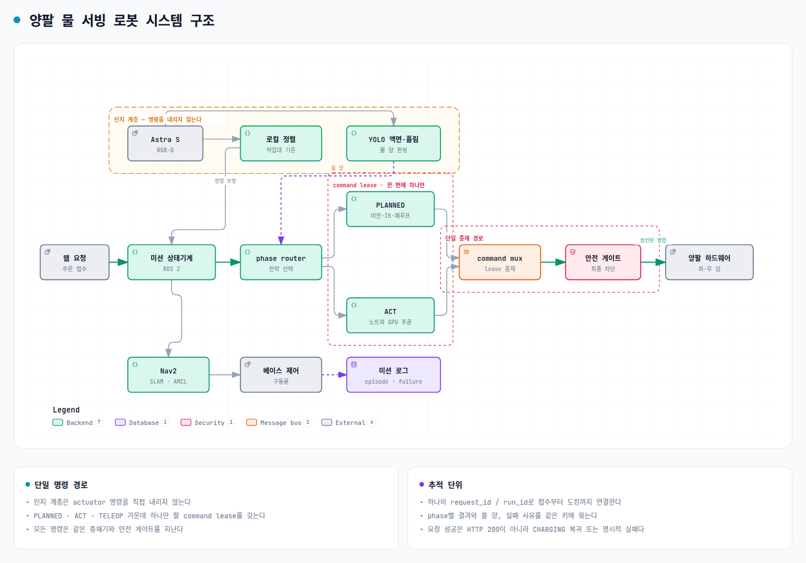

웹 주문을 받아 물을 따르고, 테이블까지 전달한 뒤 충전소로 복귀하는 이동형 양팔 로봇

물 한 잔을, 준비부터 테이블 위까지
충전소에서 대기하던 로봇이 웹 요청을 받아 주방으로 이동하고, 왼팔로 컵·오른팔로 물통을 잡아 물을 따른 뒤, 컵을 상판에 싣고 손님 테이블에 내려놓고 충전소로 복귀한다.
네 방향에서 같은 결론 — 한 대가 더 많은 일을 해야 한다
서빙로봇은 '나르기'까지 — 마지막 1 m는 사람 몫
로봇이 테이블에 도착해도 내려놓는 동작은 사람이 한다. 준비부터 테이블 위 전달까지 가능한 양팔 조작 기술이 다음 단계다.
"로봇이 자리에 도착하면 음식을 테이블로 내려야 한다" · 외부 E2-1 · ZDNet Korea, 2023.2보급은 느는데, 활용 범위는 그대로
국내 서빙로봇 보급은 2021년 3,000대 → 2023년 11,000대(예상)로 늘었지만, 업계는 "한 대가 한 가지 일만 하는 구조로 비용 상쇄 어려움"을 확산 걸림돌로 꼽는다.
외부 E2-3 · 식품외식경제, 2023.7 · E2-2 · 서울경제, 2026.9.21일할 사람은 줄고, 대우는 낮다
외식업 임금은 전 산업 평균의 58% 수준이고, 핵심 노동 연령층(30~59세)은 2033년까지 약 182만 명 줄어들 전망이다.
외부 E1-1 · 한국농촌경제연구원 인용, 2025업계가 1순위로 요청한 것도 자동화
외식업체가 가장 먼저 요청한 정책은 자동화·로봇 기술 지원(68.8%)이다 — 규제가 아니라 현장의 요청이 먼저다.
외부 E1-1 · 한국농촌경제연구원 인용, 2025한 대에 준비·운반·전달·복귀를 묶는다
한 대가 한 가지 일만 한다
준비와 테이블 위 전달은 여전히 사람 몫이라, 로봇 한 대의 활용도가 낮고 비용을 상쇄하기 어렵다.
양팔과 이동을 한 미션으로 묶는다
준비·운반·테이블 위 전달·충전 복귀를 하나의 웹 주문 흐름으로 잇는다.
시중 서빙로봇과 무엇이 다른가
| 업무 | 일반 서빙로봇 | HOLD THE FLOW |
|---|---|---|
| 주문 연결 | 직원이 음식을 올리고 목적지 입력 | 웹 주문이 미션으로 바로 연결 |
| 음료 준비 | 사람 | 양팔 물 따르기 |
| 운반 | 트레이 운반 | 상판 적재 운반 |
| 테이블 위 전달 | 손님·직원이 내려놓음 | 컵을 다시 잡아 테이블에 배치 |
| 복귀 | 대기 위치 복귀 | 충전소 복귀·충전 시작 확인 |
| 기록 | 주행 로그 | 주문 단위 phase 기록·실패 원인 기록 |
정책을 만드는 도구 위에, 서비스를 운영하는 계층을
| 프로젝트 | 구성·비용 | 공개 범위 | 공개 자료에 없는 부분 |
|---|---|---|---|
| ALOHA E3-1 | 탁상 고정 양팔, $20k 미만 | 저가 양팔 텔레옵, ACT 정책 | 이동, 미션 운영 |
| Mobile ALOHA E3-2 | 이동 양팔, $32k | 전신 텔레옵, 과제당 시연 50회 | 단일 과제 모방학습, 고정 팔 높이 |
| XLeRobot E3-3 | SO-101×2 + 이동 베이스, 약 $660 | 텔레옵, MuJoCo, RL·VLA 학습 | 주문 연결, 충전 복귀, 실패 기록, Nav2 연동 |
| LeRobot bi-SO101 E3-4 | SO-101 양팔 | 양팔 시연 기록·정책 학습 프레임워크 | 이동 베이스, 미션 운영 |
우리가 더하는 것 네 가지
이동·조작 역할 분리
주행 중에는 상판 운반, 조작 중에는 베이스 정지 — 같은 로봇이 두 역할을 겹치지 않고 수행
주문 단위 기록
웹 주문 → phase별 결과 → 도크 복귀까지 하나의 request_id/run_id로 연결
phase별 공정 비교
같은 조건에서 계획 기반(PLANNED)과 학습 정책(ACT)을 phase 단위로 비교, 더 나은 쪽만 채택(HYBRID)
실패 데이터 규약
증상 → 원인 가설·기각 근거 → 확인된 원인 → 같은 조건 재시험 → 학습 데이터 사용 결정
그래서, 실제로 되나요?

15컷 편집본 · 구간별 2~8배속 · IK + 상태기계로 실행(학습 모델 미사용). 왼손은 이전 후보(80 mm 강체 패드) 형상 가정 — 현행 순정 그리퍼 재실행은 로드맵 G5.
| 완주 시간 | 473.9초 (도크 복귀까지) |
| 최종 물 입자 | 컵 687 · 병 227 · 외부 4 |
| 운반 중 추가 손실 | 0 |
| phase 통과 | 12/12 dock_roundtrip02 |
인지는 판단만, 팔 명령은 한 통로로

카메라·인식 모델은 판단만 하고 모터를 움직이지 않는다. 계획 기반·학습 정책·텔레옵 중 한 번에 하나만 팔 명령권(lease)을 갖고, 모든 명령은 같은 중재기와 안전 게이트를 지난다.
| 로봇 Raspberry Pi 4B | 센서·SLAM/AMCL·Nav2·미션 상태기계·계획 기반 조작·명령 중재·watchdog |
| 외부 노트북 RTX 5050 8GB | 웹 UI·학습 정책 추론·YOLO·학습 |
| Wi-Fi | 노트북은 서보 포트를 열지 않고, 명령은 Pi를 거친다 |
phase마다 계획 기반과 학습 정책을 같은 조건에서 비교
산업형 기준선
RGB-D·그립 계산·IK·검증 궤적·그리퍼 피드백·액면 폐루프
전체 IL 가능성 측정
모든 조작 phase를 학습 정책(ACT checkpoint)으로 실행
실이점 구간에만 학습
phase별로 더 나은 방식을 선택 — 첫 후보는 POUR만 ACT
무엇을 셀 것인가, 언제·누가 확인하는가
핵심 정량 지표 계획 · 목표값은 팀 합의 후 확정
- phase별 성공 횟수 / 전체 횟수
- 목표 물 양 오차(mL), UNDER/OVER/SPILL/UNKNOWN 비율
- 사람 개입·복구 횟수
- 1회 소요 시간(cycle time)
- 관측→명령 지연 p95, 제어 지터
- 위치·조명·초기 잔량 변화에서의 결과
기간별 게이트
| G1 | 새 차체 구동계 이식·기본 주행·새 지도 | 10/6~10/10 |
| G2 | station 교시·반복 접근 | 10/13~10/17 |
| G3 | 웹 주문→Nav2 실차 이동+조작 Action | 10/20~10/24 |
| G4 | 무선 두절·도킹·충전 신호 | 10/20~10/24 |
| G5 | 순정 그리퍼 시뮬 재실행·IK 실물 건식 | 10/27~10/31 |
| G6 | 전 lane 연결·통합 리허설 | 11/2~11/3 |
오늘 꼭 기억해 주셨으면 하는 네 가지
웹 주문 한 건, 12 phase 완주
473.9초 만에 도크 복귀까지 · 운반 중 물 손실 0
복도 77 m 왕복
20/20 waypoint · recovery 0회 (선행 JD-AMR 구동계)
SmolVLA 정책 학습
eval_loss 38.8%↓(20→60 에피소드) · 실물 롤아웃 태스크 완주 관찰
오픈소스 팔 + 서비스 계층
역할분리·주문기록·phase 비교·실패 규약 네 가지를 더한다
네 lane이 하나의 Action 계약에서 만난다
- SLAM/Nav2·장애물 회피
- station 반복 접근
- Isaac Sim 모델·접촉 검증
- 차체·상판·그리퍼
- 배선·전원
- 양팔 물 따르기 모방학습
- 텔레옵 시연 수집·정책 학습
- 컵·물통 위치 인식
- 물 양·흘림 판정
5주의 시나리오
새 차체가 굴러간다
- 구동계 이식·기본 주행
- 식당 공간 새 지도 생성
정해진 자리에 정확히 선다
- 충전소·주방·테이블 station 교시
- 반복 접근 성공률 기록
웹 주문이 실제 주행을 움직인다
- Nav2 실차 이동 + 조작 Action 연결
- 무선 두절·도킹·충전 신호 시험
순정 그리퍼로 다시 붓는다
- 현행 그리퍼로 시뮬 전체 재실행
- IK 컵 파지 실물 건식 시험
네 lane이 하나로 만난다
- 정책·인지 결과물 연결
- 통합 리허설 — end-to-end 기록 1건 이상
막힐 것으로 예상되는 지점, 지금부터 대응
| 분야 | 예상 난제 | 해결 방안 |
|---|---|---|
| 주행 | 팔·상판이 올라간 새 차체의 정지거리·footprint 변화 | 실제 외곽으로 footprint 재작성, Collision Monitor 실측값 반영 |
| 온보드 | Pi 4B USB 포트 수·단일 컨트롤러 대역폭 | LiDAR·센서 재배치, 팔 버스 통합 검토, Pi 5 전환 조건 측정 |
| 무선 | 추론 지연·두절 중 오래된 명령 실행 | 관측 ID·유효기간 계약, 두절 시 안전 hold |
| 조작 | SO-101 페이로드와 물통 무게 | 무게 상한 실측, 컵 몸통 중간 수평 파지 |
| 물 양 | 투명 컵·반사로 액면 인식 어려움 | 컵 한 종류·고정 배경부터, 컵별 보정표, 저울 대조 |
| 통합 | lane별 결과물의 입출력 불일치 | ROS 2 Action 계약 선확정, mock으로 먼저 연결 |
각자 다른 배경, 같은 계약으로 합류
기계공학 학사(FEA·위상최적화) → Unity 개발 약 5년(모바일 게임 1인 개발·과학실험 시뮬 80개) → DAPIER 부트캠프(ROS 2·SLAM/Nav2, Isaac Lab)
- 선행 JD-AMR 복도 77.090 m 왕복 실차·1회
- 20/20 waypoint 통과, Nav2 recovery 0회
- 원격 통신 분리로 LiDAR 공백 10.750초→0.112초
왼팔 컵·오른팔 물통 물 따르기를 텔레옵 시연 기반 모방학습으로 구현
- 텔레옵 에피소드 60개 수집(20⊂40⊂60 비교 설계)
- 모델 4종 시도(ACT·SmolVLA·pi0·GR00T) → SmolVLA 선택
- eval_loss 20개 0.2549 → 60개 0.1559 (38.8%↓) 오프라인 지표
- SmolVLA-40 실물 롤아웃 1회 태스크 완주 관찰 실물·1회
- pi0 원격 추론 지연 7.4초→130ms대 단축
담당자 확인 후 이력·실적 기입 예정
- 상·하부 프레임 450×340 mm, 상판 높이 720 mm 설계
- 그리퍼 소재 비교 — 왼손 SO-101 순정 죠, 오른손 ggao50 선정
담당자 확인 후 이력·실적 기입 예정
- YOLO segmentation 기반 액면 판정 방법 설계
- 투명·불투명 컵 판정 방식 구분, 불투명 컵은 검증 예정
식당에서 만든 미션 뼈대, 그 다음은 실험실
| 물 서빙 | 실험실 적용 |
|---|---|
| 웹 주문 | 실험 요청(시료 ID·목표량) |
| 주방·테이블 station | 시료 보관대·분석 장비 앞 |
| 왼팔 컵·오른팔 물통 따르기 | 한 팔 용기 고정·한 팔 시료 따르기 |
| 물 양 판정(YOLO·보정표·저울) | 눈금·중량 기반 정량 확인 |
| 주문 단위 기록·실패 규약 | 실험 추적성(누가·언제·얼마나) |
명령은 한 통로로, 실기체는 확인 후에만
단일 lease + 안전 게이트
계획 기반·학습 정책·텔레옵 중 한 번에 하나만 명령권을 갖는다. 스톨·관절 한계·충돌 위험·통신 timeout·컵 이탈·흘림 위험은 실제 hold/stop으로 연결한다. 정지가 항상 토크 OFF는 아니다 — 물체를 든 자세에 맞춰 정지 동작을 검증한다.
유효기간 지난 명령은 폐기
행동에는 관측 ID·checkpoint 버전·관절 순서·단위·유효기간을 포함한다. 지연·중복·재연결 후 남은 행동은 Pi에서 폐기하고 안전 hold로 전환한다. 추론 포트는 인터넷에 공개하지 않는다.
실물은 확인 후, 데이터는 비공개
팔을 움직이는 모든 동작은 사용자 확인 후 실행한다. 데이터셋·모델·rosbag은 저장소에 커밋하지 않고 HuggingFace Hub(private)에 둔다. 코드·문서·스키마만 Git으로 관리한다.
오늘 멘토링에서 검증받고 싶은 두 가지
에이전트 계층의 경계
자연어 주문 해석이나 예외 상황 설명을 에이전트에 맡길 때, 허용된 스킬 목록 안에서만 고르게 하는 설계가 현장에서 충분할지 검증받고 싶습니다. (현행 범위 밖, 확장 후보)
모바일 매니퓰레이터의 현장 운용
팔을 더한 서빙 로봇의 기능 대비 비용 판단과 매장 안전 운용 기준에 대한 조언을 구하고 싶습니다.
물 한 잔을, 준비부터 테이블 위까지. 한 주문의 기록이 끝까지 이어지는 로봇을 만듭니다.